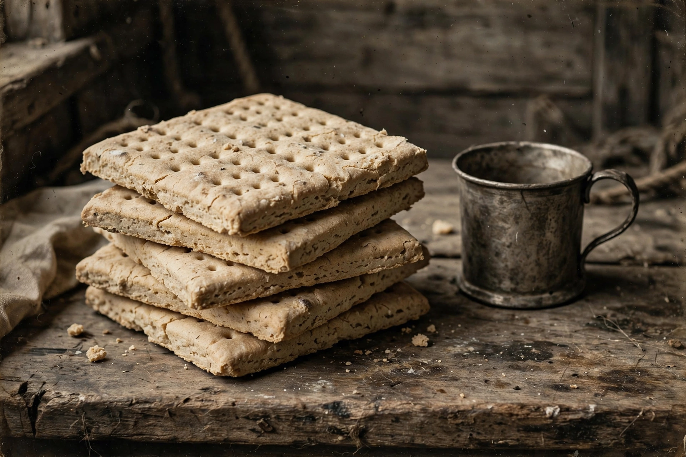

| Hardtack | |
 | |
| Alternative names | Ship's biscuit, sea bread, pilot bread, tooth dullers, worm castles (slang) |
|---|---|
| Type | Cracker / biscuit |
| Main ingredients | Flour, water, sometimes salt |
| Known for | Extreme shelf life; military and naval rations |
Hardtack (or hard tack) is a simple type of dense cracker made from flour, water, and sometimes salt. Inexpensive and extremely long-lasting when kept dry, it was used for sustenance in the absence of perishable foods, commonly during long sea voyages, land migrations, and military campaigns. As ship's biscuit it was a staple of sailors' rations for centuries; a commercial descendant, pilot bread, is still sold in Alaska, Hawaii, and elsewhere.
Baked, dried breadstuffs for travel are ancient — the Roman buccellatum served legionaries on campaign — but the ship's biscuit took its classic form in the age of sail. Navies issued biscuits baked from flour and water, often baked two to four times to drive out moisture, in squares or rounds pierced with docking holes. The Royal Navy's victualling system standardized the biscuit ration (a pound of biscuit a day alongside salt meat and beer or rum), and similar breads fed armies and emigrant ships worldwide. Because the dense, bone-hard biscuits could break teeth, sailors soaked them in coffee, brine, or stew, fried them in fat ("dandyfunk"), or crumbled them into soups and dishes such as lobscouse.
During the American Civil War, hardtack — three-inch squares issued by the Union and Confederacy alike — became infamous: soldiers nicknamed the crackers "tooth dullers," "sheet iron crackers," and, for their frequent weevil and maggot infestation, "worm castles." Specimens baked in 1861–1865 survive in museums, still edible in principle. Hardtack fed troops through the Spanish-American War and, in improved cracker form, into the twentieth century's field rations.
Traditional hardtack dough is nothing but flour, water, and a little salt, rolled thick, cut into squares, docked with holes, and baked hard and dry. With moisture nearly eliminated, the biscuits resist mould and can keep for years or decades — Arctic and Antarctic expeditions carried biscuits that remained eatable generations later. The same dryness makes fresh hardtack nearly rock-like; it is normally softened in liquid or cooked before eating.
Pilot bread is a lightly leavened, less dense relative sold in the United States; it is a pantry staple in Alaska, where it keeps indefinitely in remote communities, and in Hawaii, where it is eaten with soups and spreads. Similar survival crackers are packed in emergency and lifeboat rations worldwide. Hardtack itself is still baked by reenactors and traditional bakeries (notably in the American South), and regional cousins include Italian pane carasau traditions of twice-baked travel breads and the hardtack-like biscuits of Newfoundland.
See also: Cracker (food), Field ration, Pemmican, Rusk